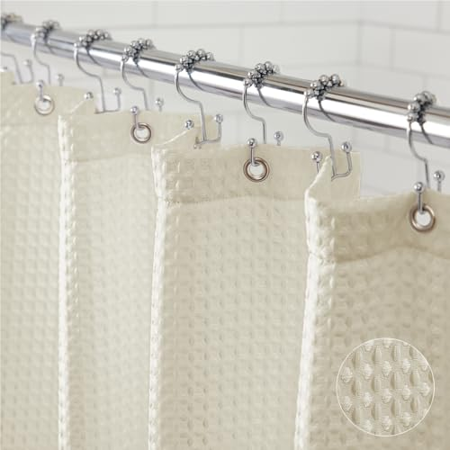
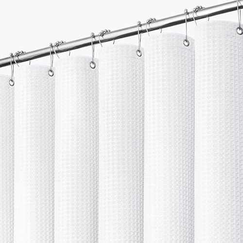
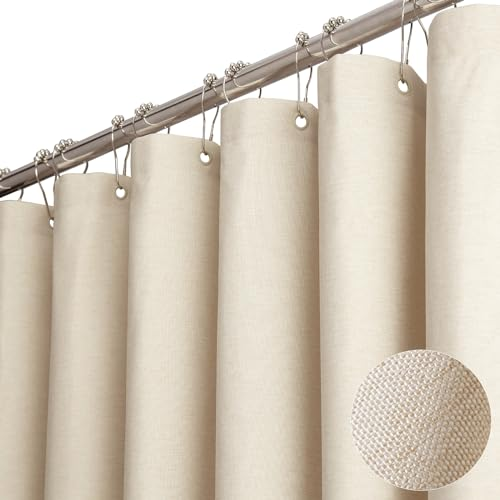

Things to Know Before You Buy
- They solve different problems. Fabric is about looks and longevity; plastic is about cheap, no-fuss water protection. Most people end up using both: a fabric curtain on the outside, a plastic or PEVA liner on the inside.
- Fabric usually needs a liner. Most fabric curtains aren't fully waterproof on their own, so budget for a thin liner unless you buy one specifically sold as water-repellent.
- Plastic comes in two flavors. Cheap vinyl (PVC) off-gasses a strong smell; PEVA and EVA liners are the chlorine-free versions that skip most of it for a couple of dollars more.
- Price gap is real but small in absolute terms. A plastic liner runs roughly $6 to $12; a decent fabric curtain runs $15 to $40. Over a few years, fabric often costs less because you replace it far less often.
- Care is the deciding factor for many. Fabric goes in the washing machine; plastic gets wiped down or thrown out. Pick the maintenance routine you'll actually keep up with.
Standing in the shower-curtain aisle, the choice looks simple: the soft, draping fabric one that matches a nicely styled bathroom, or the slick plastic sheet that costs less than a sandwich. The catch is that they aren't really competing for the same job. Fabric is what you see and touch every day; plastic is the workhorse that keeps water off your floor. Treating them as rivals is part of why people overthink this purchase.
This guide breaks down what each one actually is, how they hold up over years of daily showers, what they really cost once you factor in replacements, and how they differ in everyday use. By the end you'll know whether you want a fabric curtain, a plastic one, or (like most well-set-up bathrooms) a combination of the two.
Quick Answer
Neither one wins outright. They're built for different priorities. Choose fabric if you care about how the bathroom looks, want a curtain that lasts for years, and don't mind running it through the wash now and then. Choose plastic (ideally a PEVA liner) if you want the cheapest, most waterproof option with zero laundry. For most bathrooms, the smartest move is both: a fabric curtain facing the room and an inexpensive plastic liner doing the wet work behind it.
What is Fabric?
A fabric shower curtain is a woven or knit textile panel, most often made from polyester, a cotton-polyester blend, or occasionally pure cotton or linen. Polyester is the workhorse of the category: it's strong, dries fast, and resists mildew better than natural fibers, which is why the vast majority of fabric curtains you'll find are some grade of polyester. Cotton and linen feel more luxurious and drape with a heavier, more hotel-like fall, but they soak up water and need more careful washing.
Here's the part that trips people up: most fabric curtains aren't truly waterproof. The weave repels and sheds water to a point, but spray will eventually wick through, which is why fabric is typically paired with a thin liner that takes the direct hit. Some polyester curtains are treated to be water-repellent and sold to use on their own, but they're the exception.
What you're really buying with fabric is appearance and feel. It hangs with weight and structure instead of clinging, it comes in nearly any color, texture, or pattern, and it doesn't crinkle or rustle when you brush against it. It's the difference between a bathroom that looks finished and one that looks functional.
What is Plastic?
A plastic shower curtain or liner is a single waterproof sheet, usually one of three materials. Vinyl (PVC) is the classic, cheapest version, fully waterproof but responsible for that sharp "new shower curtain" smell, which comes from chemicals it off-gasses for the first few days. PEVA and EVA are the modern alternatives: chlorine-free plastics that keep the waterproofing and low price while skipping most of the odor. If you're buying plastic today, PEVA is the one to look for.
The defining trait is that water simply doesn't penetrate it. Spray beads up and runs straight down into the tub, so plastic is what actually keeps your floor dry. That's why it's sold both as a standalone curtain and, more commonly, as a liner meant to hang behind a fabric curtain.
The trade-offs are equally clear. Plastic is lightweight and prone to billowing inward in a draft or "hugging" you mid-shower, it creases out of the package and never fully relaxes, and the thinner grades can tear at the grommets. It also isn't something you wash and keep for years. It's a consumable you wipe down and eventually replace. What you gain is the lowest possible price and bulletproof water resistance.
Head-to-Head: Build Quality & Durability
This is fabric's clearest win. A decent polyester curtain holds up to years of daily use and dozens of trips through the washing machine without falling apart. The header where the rings pass through is usually reinforced with stitching or metal grommets, so it doesn't tear away from the rod the way thin plastic does. Heavier weaves resist the kind of sagging and stretching that eventually distorts cheaper curtains.
Plastic is a different story, and it depends heavily on grade. Thin vinyl or PEVA liners (the ones in the $6 range) are prone to splitting at the grommet holes, especially if you yank the curtain closed by one corner. Thicker liners (think 8-gauge vinyl) hold up far better and resist tearing, but even the good ones get brittle and discolored over time as the plastic ages. You're not repairing a torn liner; you're tossing it.
The honest trade-off: fabric is built to last and to be maintained, while plastic is built to be cheap and replaced. A quality fabric curtain can realistically serve five years or more. A budget plastic liner often needs swapping every six to twelve months once the bottom edge gets grimy or a grommet gives out. If durability is your top priority, fabric isn't close.
Head-to-Head: Price & Value
On the sticker, plastic wins easily. A basic PEVA or vinyl liner runs about $6 to $12, while a fabric curtain typically lands between $15 and $40 depending on material and weight. If your only question is "what's the cheapest thing that keeps water off the floor," plastic is the answer.
Value over time tells a different story. If a $7 liner needs replacing roughly twice a year, you're spending around $14 to $20 annually and generating a steady stream of plastic waste. A $30 fabric curtain that lasts five years costs about $6 a year, and that's before you account for it looking better the entire time. Buy fabric and a liner together, and you spread the wet-duty wear onto the cheap part while the expensive part stays clean and lasts. For most people that combination is the best value, not the lowest price.
Head-to-Head: Use Experience
Day to day, the two feel completely different. Fabric hangs with weight, so it stays put, drapes cleanly, and doesn't make noise when you move past it. It also won't cling to your arm or leg mid-shower the way a light plastic sheet does when the warm air inside the shower pulls it inward. That "shower curtain hug" is one of the most common complaints about plastic, and it's almost entirely a fabric-versus-plastic issue rather than a brand one. The fix for plastic is weighted hems or magnets along the bottom, which the better liners include.
Plastic's advantage is convenience and dryness. Water never soaks through, it dries on its own in minutes, and there's nothing to launder; you wipe it down or replace it. Fabric requires you to actually wash it on a schedule to keep mildew off, and a fabric curtain used without a liner will stay damp longer and can start to smell if your bathroom doesn't ventilate well. There's also the smell on the other side: a fresh vinyl liner off-gasses for a few days, while fabric and PEVA don't.
Net experience: fabric feels nicer and behaves better in the shower, plastic is lower-effort and guarantees a dry floor. Pair them and you get the best of both: the fabric you interact with, the plastic doing the dirty work.
When to Choose Fabric
Go with fabric if the bathroom's appearance matters to you and you want something that lasts. It's the right call for a guest bathroom you want to look pulled-together, for anyone who's tired of replacing flimsy liners twice a year, and for people who'd rather toss a curtain in the wash than buy a new one. Fabric is also the better choice if you're sensitive to plastic smell, since polyester and cotton blends don't off-gas. The one thing to plan for is a liner behind it. Most fabric curtains aren't fully waterproof, so pair it with a thin plastic or PEVA liner and you get the looks plus a guaranteed-dry floor.
When to Choose Plastic
Choose plastic when cost and zero maintenance outrank everything else. It's ideal for a rental you don't want to invest in, a kids' or high-traffic bathroom where things get destroyed anyway, a basement or gym shower where function beats form, or simply as the waterproof liner behind a fabric curtain. Plastic guarantees a dry floor with no laundry on your part, and when it gets grimy, you wipe it or replace it for a few dollars. If you go this route, spend the extra dollar or two on a PEVA or EVA liner instead of standard vinyl: you keep the low price and full water resistance but skip the chemical smell. A liner with a weighted or magnetized hem will also stop the billowing that gives plastic its bad reputation.
Our Top Picks
After comparing both sides of the fabric vs. plastic shower curtains debate, these are the three picks we keep recommending — one for each main scenario.

Editor’s Pick
GORILLA GRIP Waffle Shower Curtain Thick
If you want one pick that wins on the most variables in this comparison, this is the one to start with.
Frequently Asked Questions9.99 Check Price on Amazon

Best Value
Dynamene White Fabric Shower Curtain， Waffle
The smartest shower curtain pick if you care about price without giving up the features that actually matter.
Frequently Asked Questions5.98 Check Price on Amazon

Premium Choice
BTTN Fabric Shower Curtain Linen Textured
Worth the upgrade when finish quality and long-term durability outweigh the higher price tag.
Frequently Asked Questions5.99 Check Price on Amazon
Frequently Asked Questions
Do you need a liner with a fabric shower curtain?
Usually, yes. Most fabric shower curtains are not fully waterproof, so they work best paired with a thin plastic or PEVA liner that takes the direct spray and keeps water off the floor. A few polyester curtains are sold as water-repellent and can go solo in a low-splash setup, but a liner is cheap insurance against a wet bathroom floor.
Which is easier to keep mildew-free, fabric or plastic?
Fabric is easier to keep clean over time because you can throw most polyester and cotton-blend curtains in the washing machine on a warm cycle. Plastic and PEVA liners resist soaking up water in the first place, but they collect a slimy film along the bottom hem that you have to wipe or replace. Fabric wins for long-term maintenance; plastic wins if you would rather just toss a $7 liner than wash anything.
Is a PEVA liner safer than a regular vinyl (PVC) one?
PEVA is a chlorine-free plastic made as an alternative to PVC vinyl, so it skips the chemicals responsible for that strong off-gassing smell you get from a fresh vinyl curtain. If you want the low price and water resistance of plastic but care about indoor air, a PEVA or EVA liner is the better pick. Airing any new plastic curtain out for a day before hanging also cuts the smell.
Why does a plastic shower curtain stick to me in the shower?
It's a draft, not magic. Warm air rising inside the shower lowers the pressure behind a lightweight plastic sheet, and the higher pressure in the room pushes it inward. Fabric is heavy enough to resist this, and plastic liners with weighted or magnetized hems mostly solve it. Leaving a small gap at the bottom or aiming the showerhead away from the curtain also helps.
Can you wash a fabric shower curtain in the washing machine?
Most polyester and poly-blend curtains can go in on a warm or cool cycle with regular detergent, though you should check the care tag first. Hang it back up damp and let it drip-dry rather than putting it in a hot dryer, which can wrinkle or damage the fabric. Washing it every few weeks keeps mildew from taking hold, which is the main maintenance advantage fabric has over plastic.
Final Verdict
There's no single winner here because fabric and plastic are good at different things: fabric for looks, longevity, and a nicer feel, plastic for low cost, zero laundry, and a guaranteed-dry floor. If you have to pick just one, fabric is the better long-term buy for most home bathrooms, while plastic makes more sense for rentals, kids' baths, and bare-bones setups. The genuinely best answer for most people, though, is to stop choosing: hang a fabric curtain you like facing the room and a cheap PEVA liner behind it, and you get the strengths of both for well under $50.